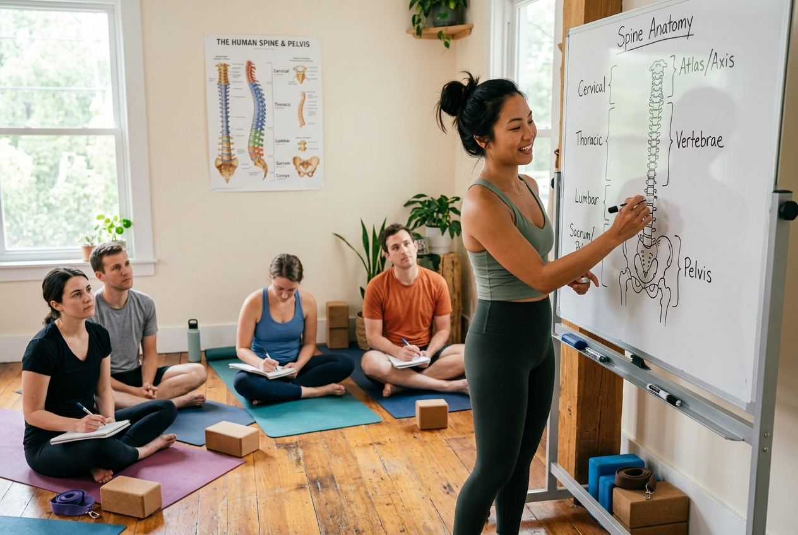
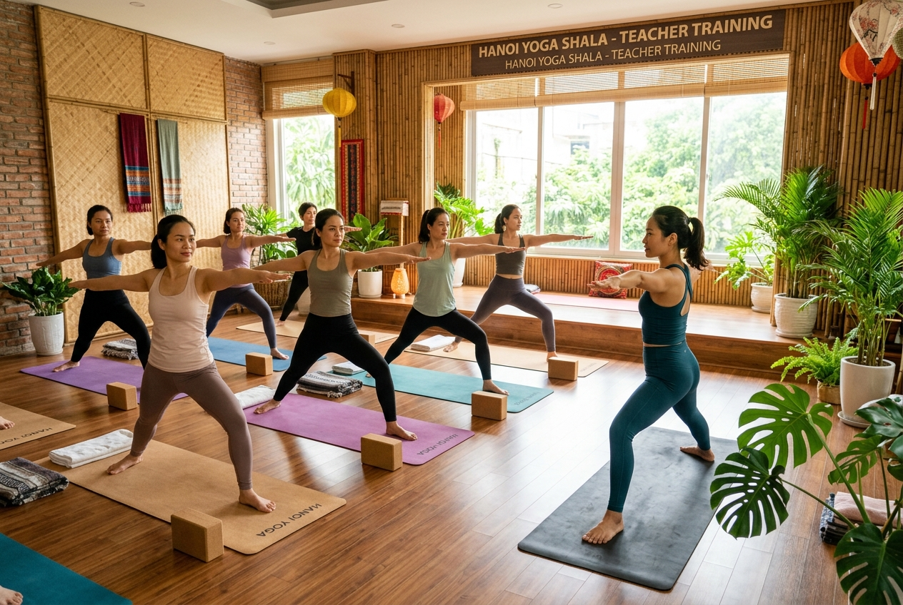
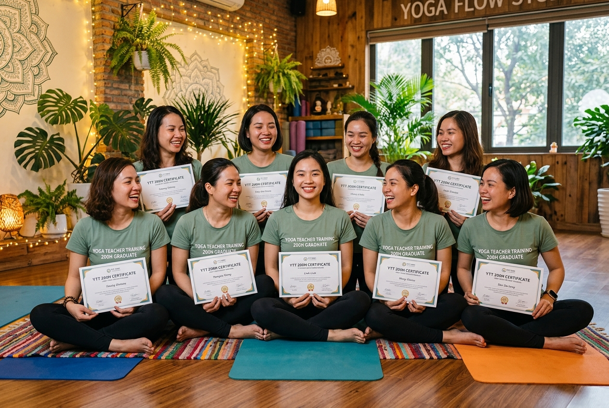

Nâng Tầm Hành Trình
Giảng Dạy Yoga
Để đứng vững trên bục giảng, bạn không chỉ cần tập giỏi — mà còn cần sự am hiểu sâu sắc về Cơ sinh học, Năng lượng, và Tâm lý học. Chào mừng đến với Thư viện Kiến thức chuyên sâu dành riêng cho Cộng đồng đào tạo Giáo viên Yoga 200 giờ.
🎓 Muốn trở thành Huấn Luyện Viên Yoga?
Xem chi tiết Khoá Đào Tạo YTT 200H — Chứng chỉ Yoga Alliance Mỹ
Giải phẫu học Ứng dụng & Cơ sinh học
Khoa học đằng sau mỗi chuyển động. Cơ sinh học giúp giáo viên hiểu "Tại sao" cơ thể học viên lại kháng cự hoặc dễ bị chấn thương.

Cơ hoành & Hệ thần kinh phó giao cảm
Phân tích giải phẫu hô hấp và cách kiểm soát dây thần kinh phế vị thông qua kỹ thuật thở (Pranayama) trong lớp học phục hồi.
Đọc bài phân tích chuyên sâu →Cột sống & Yoga: Hiểu đúng để dạy đúng
Giải phẫu cột sống cho giáo viên: Kyphosis, Lordosis, Scoliosis — Cách nhận biết và điều chỉnh tư thế an toàn.
Đọc bài phân tích →Xương chậu & Chuyển động xoay
Sự thật về góc xoay trong/xoay ngoài của đầu xương đùi và lý do tại sao không phải ai cũng gác được chân Hoa Sen.
Đọc báo cáo chuyên sâu →Nghệ thuật Sư phạm & Phát triển Nghề
Kỹ năng đứng lớp (Khẩu lệnh), sắp xếp chuỗi tư thế, đạo đức nghề nghiệp và tự xây dựng thương hiệu cá nhân.

Luyện Giọng Cho HLV — Từ Giọng Mỏng, Nghẹn Đến Vang Trầm
Hướng dẫn chi tiết 6 bài tập luyện giọng kết hợp Pranayama & kỹ thuật thanh nhạc, giúp HLV khắc phục giọng mỏng, nghẹn cổ họng và dạy 4-5 lớp/ngày bền bỉ.
Đọc hướng dẫn luyện giọng →Khẩu lệnh trong ca thực hành: Khớp gối quá duỗi
Ví dụ thực tế về cách sử dụng chuỗi 3 khẩu lệnh (Nhận biết → Hành động → Kích hoạt cơ) để chỉnh lỗi quá duỗi gối mà không cần chạm vào học viên.
Đọc ca thực hành →Sắp xếp chuỗi tư thế (Vinyasa Krama)
Nguyên tắc "Tư thế đỉnh": Làm sao để khởi động đúng nhóm cơ mục tiêu trước khi đưa cả lớp vào tư thế đỉnh an toàn.
Đọc bài phân tích →Nghệ thuật Khẩu lệnh trong lớp Yoga
Kỹ thuật dùng khẩu lệnh để hướng dẫn lớp đông, thiết lập năng lượng và chỉnh sửa định tuyến bằng giọng nói thay cho chạm tay.
Đọc hướng dẫn chi tiết →5 Bước xây dựng thương hiệu cá nhân
Chiến lược tiếp thị và xây dựng thương hiệu cá nhân chuyên nghiệp từ số 0 để thu hút học viên kèm riêng và cộng đồng.
Đọc bài chiến lược →Phân Tích Ca Lâm Sàng Thực Tế
Học từ thực tế. Phân tích lỗi định tuyến của học viên trong các ca học thực tiễn và cách đưa ra phương án điều chỉnh.
Quá duỗi gối — Hiểm họa đứt gân và cách phòng tránh
Ca thực hành: Học viên bị quá duỗi khớp gối trong tư thế Tam Giác (Trikonasana). Cách dùng viền bàn chân và cơ đùi trước để khóa chuyển động an toàn.
Đọc ca thực hành chi tiết →Lỗi võng thắt lưng trong Chó Úp Mặt
Ca thực hành lâm sàng: Học viên quá dẻo bị võng ngực và sụp vai trong tư thế Chó Úp Mặt. Phân tích nhóm cơ răng cưa trước.
Đọc ca thực hành chi tiết →Hỗ Trợ Sau Khóa Đào Tạo 200 Giờ
Tốt nghiệp không có nghĩa là kết thúc. Mây cam kết đồng hành cùng bạn trên hành trình giảng dạy thực tế — nơi câu hỏi thật sự mới bắt đầu xuất hiện.
Thư viện Kiến thức Liên tục
Trang Góc Huấn Luyện này chính là tài liệu bạn được truy cập vĩnh viễn. Mây cập nhật bài phân tích giải phẫu, ca lâm sàng mới liên tục.
Kèm riêng 1-1 khi cần
Gặp ca khó trong lớp? Không chắc về cách sắp xếp chuỗi tư thế? Liên hệ trực tiếp Mây qua Zalo để được tư vấn xử lý tình huống thực tế.
Cộng Đồng Giáo Viên
Kết nối với các học viên cùng khóa và các thế hệ YTT khác để chia sẻ kinh nghiệm đứng lớp, cơ hội dạy, và hỗ trợ lẫn nhau.

Sẵn sàng bước vào
hành trình giảng dạy?
Mây trực tiếp giảng dạy phân môn Giải Phẫu & Kỹ Năng Sư Phạm trong Chương trình Đào tạo Giáo viên Yoga 200 giờ (đạt chuẩn Liên đoàn Yoga Quốc tế) tại Học viện Giang Metta Yoga — kèm theo hỗ trợ sau khóa học không giới hạn thời gian.
Đăng ký nhận tư vấn Khoá kế tiếp
Để lại thông tin để Mây tư vấn lộ trình học phù hợp nhất với thể trạng và định hướng của bạn.
🔒 Thông tin của bạn được bảo mật tuyệt đối. Mây sẽ liên hệ qua Zalo trong 24h.